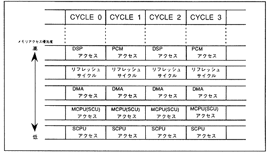

When accessing the sound memory from SCSP, the following priority is maintained.
- PCM data read by PCM sound source, access by DSP
- DRAM refresh cycle
- DMA transfer
- Access by main CPU
- Sound CPU access
When there is an access request with a high priority, a wait is entered for an access request with a low priority. In addition, the determination of which device memory access is permitted for a device requesting memory access (PCM tone generator, DSP, main CPU, sound CPU, DMA, etc.) is based on actual memory access. As a result, the access request with higher priority will not be generated while the access request with lower priority is being executed.
Figure 3.2 Memory access priority

∙ Performance of SCSP / Sound CPU is determined by memory cycle allocation.
∙ Memory cycles are performed 128 times per sample (1 / 44.1K ≒ 22.68μsec), and these 128 times are distributed to each device. Since the number of CPU accesses varies depending on the application, there is no best way to perform memory access.